How does a country plan its economy in five year blocks? Did the last plan hit its targets? How do the provinces differ? Who lives where? And what comes next?
This project answers those questions in plain words, with numbers you can check. It is written for a beginner. Every idea is explained before it is used, and every number names its source.
One thing to know up front: China does not hold competitive presidential elections, so there is no elections chapter here. This is a planning, demographics, and macroeconomics project.
Full code, data, and sources: github.com/jwavalosq/china-plan-vs-reality
Every five years, China writes a plan. It starts with research and public consultation, then the Communist Party leadership sets the direction, then the National People's Congress, the national legislature, formally adopts it. Ministries, provinces, and state companies then turn the national targets into their own detailed plans.
Targets come in two kinds. Binding targets are promises with accountability, for example pollution limits and food security. Indicative targets are goals to aim for, for example growth and research spending. The 14th plan had 20 quantitative targets, 8 of them binding. Alongside the five year plans sit Long-Range Objectives through 2035, the longer horizon the plans build toward.
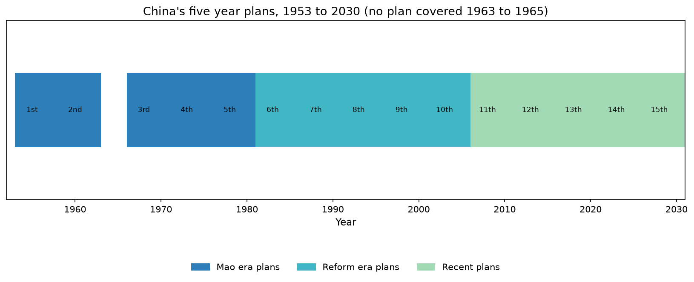
The long story in one paragraph: China was one of the poorest countries on earth in 1978, and it is now the world's second largest economy. That transformation came from planning plus markets, not from planning alone. And it came with real failures that this project does not hide.
GDP rose from 59.8 billion dollars in 1960 to 149.8 billion in 1978 to 18,729.7 billion in 2024. GDP per person rose from 89.7 dollars to 156.7 dollars to 13,293 dollars across the same years. From 1978 to 2015, the economy grew about 9.8 percent a year on World Bank data.
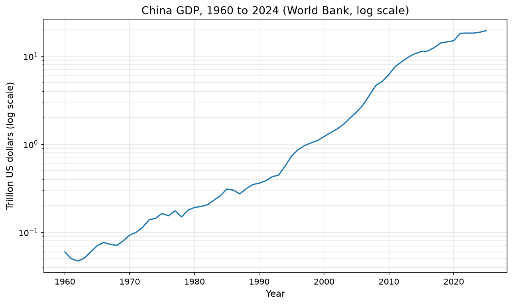
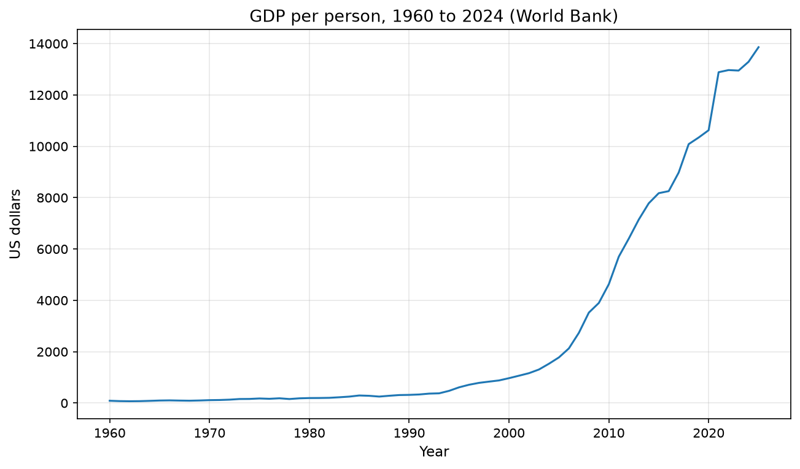
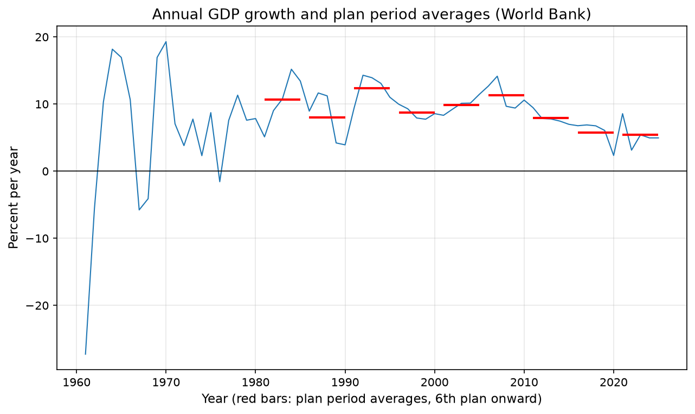
Growth was fastest in the 11th plan period (11.30 percent a year), then slowed step by step: 7.91 percent in the 12th, 5.77 percent in the 13th, 5.41 percent in the 14th. Slower growth at a much larger size is normal. Five percent of a 19 trillion dollar economy is far more new output than 11 percent of a 3 trillion dollar economy.
Extreme poverty at the World Bank 2.15 dollar a day line fell from 97.0 percent in 1981 to 0.0 percent in 2019. On China's own rural poverty line, the official count fell from 770 million people at the end of 1978 to 98.99 million in 2012 to zero in 2020.
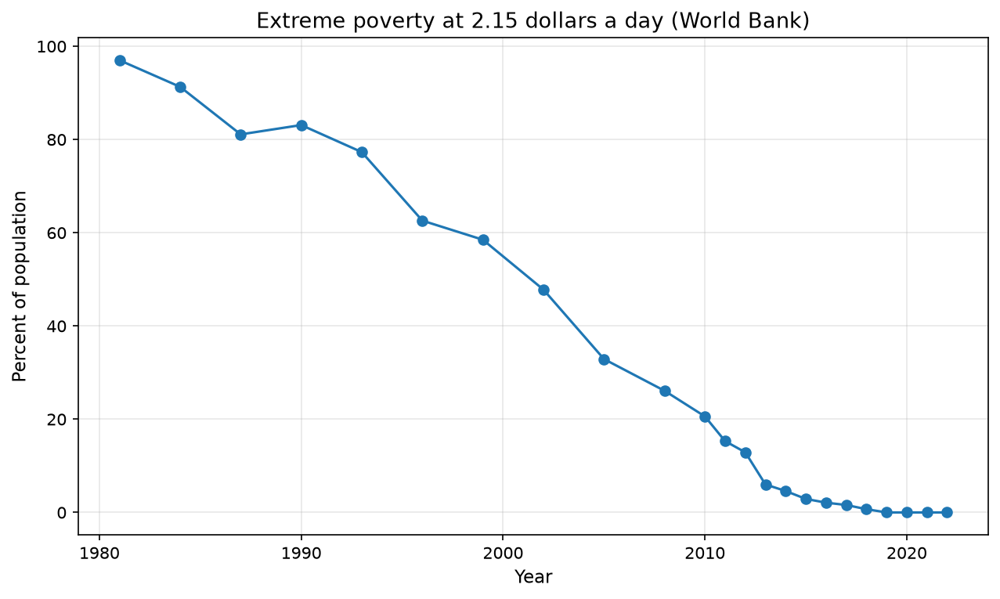
Life expectancy rose from 33.4 years in 1960, a famine year dip, to 63.1 years in 1978 to 78.0 years in 2024 on the World Bank series. The official figure for 2024 is 79.0 years. Both are shown, because the two series differ and the reader should see that.
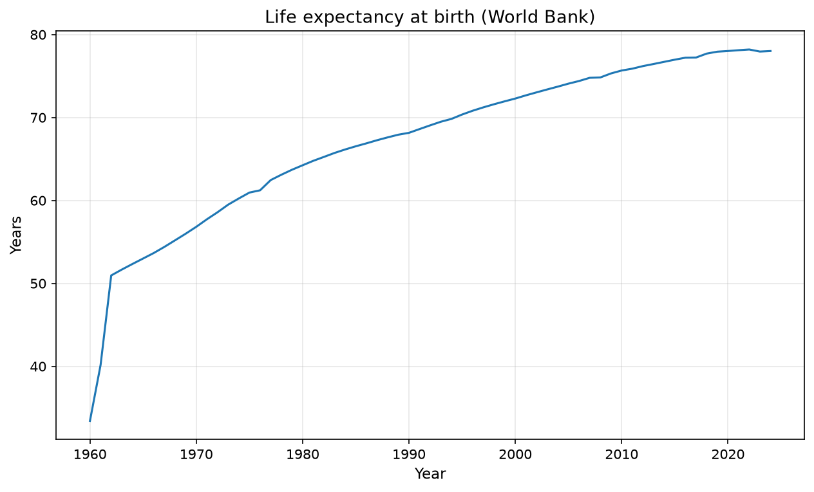
Cities transformed the country. The urban share rose from 17.9 percent in 1978 to 67.89 percent in 2025 (the national statistics office permanent resident rate). Births fell from 17.86 million in 2016 to 7.92 million in 2025, and the population has now fallen four years in a row.
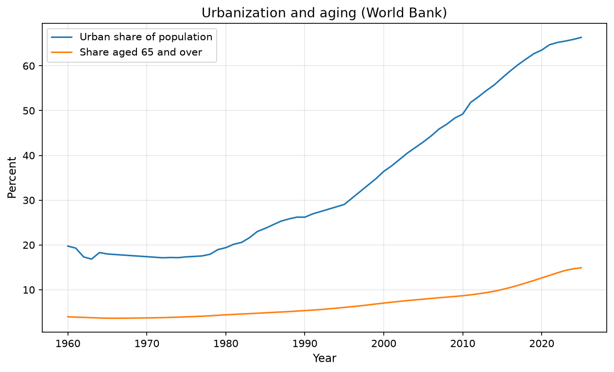
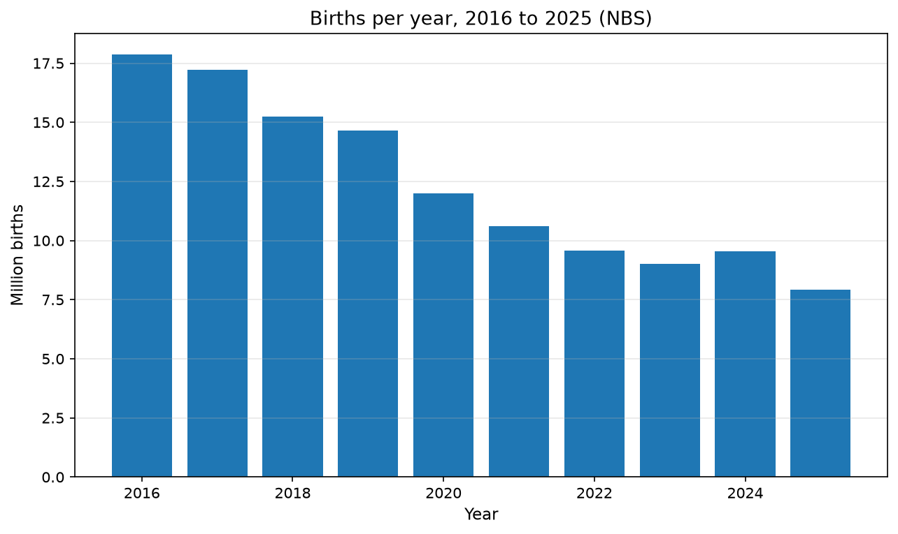
Trade tells the story of opening up and rebalancing. Exports peaked at 35.5 percent of GDP in 2006 and were 20.4 percent in 2024. China now grows more from its own consumers and investment than from exports.
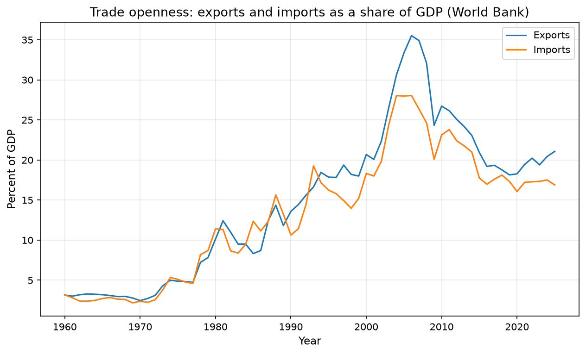
| Plan | Target | Actual |
|---|---|---|
| 2nd plan (1958 to 1962) | Farm output up 270 percent | Up about 35 percent |
| 11th plan (2006 to 2010) | GDP growth 7.5 percent a year, energy intensity down 20 percent | Growth 11.2 percent, energy down 19.1 percent |
| 12th plan (2011 to 2015) | GDP growth 7 percent a year, energy intensity down 16 percent | Growth about 7.8 percent, energy down 18.2 percent |
| 13th plan (2016 to 2020) | GDP growth at least 6.5 percent a year, energy down 15 percent, carbon down 18 percent | Growth about 5.8 percent, energy down about 13.8 percent, carbon down about 22 percent |
The pattern: growth targets were usually beaten in the fast years and missed when the economy slowed, while environmental targets were mixed, with carbon beating its target in the 13th plan even as energy missed its own.
The project assesses 14 major policies with verdicts of worked, mixed, missed, reversed, or too early to judge. A few examples:
A famine during the Great Leap Forward (1958 to 1962) killed tens of millions. The death toll is contested: government statistics imply about 15 million excess deaths, while scholarly estimates range from 15 million to 46 million, with newer estimates concentrated between 30 million and 46 million. Named estimates are given in notebook 02, and no single number is presented as settled.
Other failures covered honestly: the Cultural Revolution (1966 to 1976), severe pollution from coal-led growth, overcapacity, debt near 296 percent of GDP in late 2025, a property crash (sales value down 54 percent from 2021), and a shrinking, aging population. Coal still supplied 51.4 percent of energy use in 2025.
The 14th plan (2021 to 2025) is scored target by target in notebook 03. Seventeen of its 20 quantitative targets were met. Two were missed: carbon intensity fell about 12 percent against an 18 percent target, and childcare slots reached 4.1 per 1,000 children against a 4.5 target. One is not yet reported: working-age average education, for which no verified 2025 actual was found.
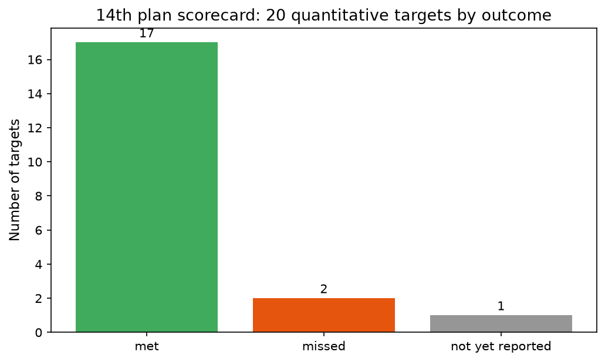
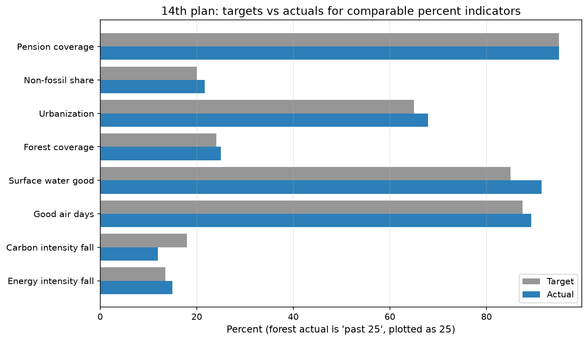
Reported 2025 results (official figures, attributed as such): GDP 140,187.9 billion yuan, up 5.0 percent; GDP per person 99,665 yuan (13,953 dollars); urbanization 67.89 percent; good air quality days 89.3 percent; surface water grade III or better 91.4 percent; forest coverage past 25 percent; energy production capacity 5.13 billion tons of coal equivalent. The Government Work Report states all 20 targets were accomplished. Both claims are shown side by side in the project, and the project takes no position on which characterization is correct.
China is not one economy. It is 31 provincial economies of wildly different size and wealth, and the gaps are the story of this chapter.
Guangdong (14.15 trillion yuan in 2024) and Jiangsu (13.67 trillion) together are more than a fifth of the national economy. GDP per person runs from about 227,000 yuan in Beijing to about 52,000 yuan in Gansu, a ratio of about 4.4 to 1. In 2025, Tibet grew fastest at 7.0 percent while Liaoning grew slowest at 3.7 percent. The East region holds 39.0 percent of the provincial GDP sum; the Northeast holds 4.7 percent, last by far.
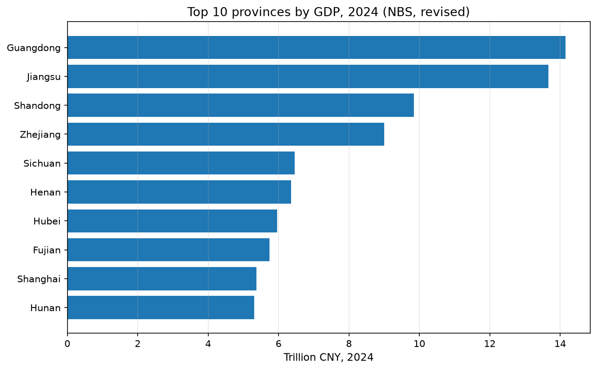
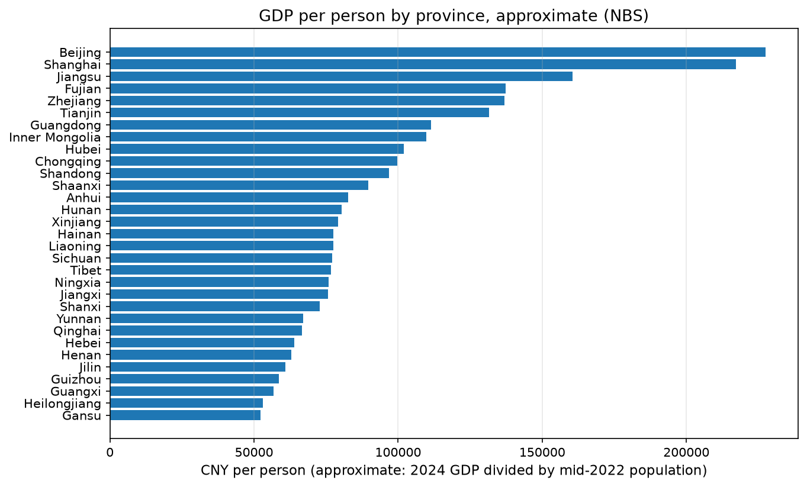
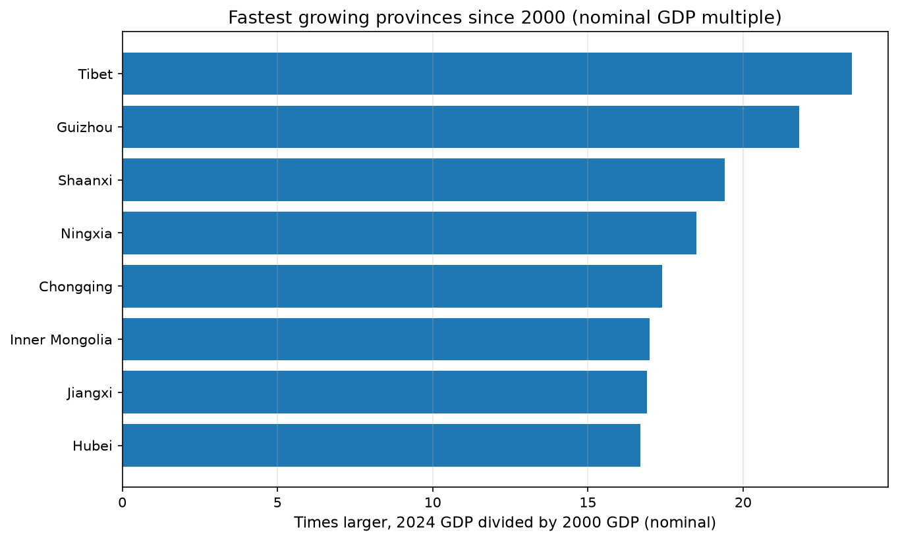
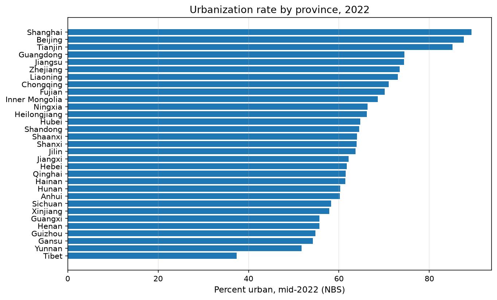
The 2020 census counted 1,411.78 million people: 91.11 percent Han and 8.89 percent ethnic minorities. The largest minority groups are the Zhuang (19.57 million), Uyghur (11.77 million), Hui (11.38 million), Miao (11.07 million), and Manchu (10.42 million). By the end of 2025 the total was 1,404.89 million, down 3.39 million, the fourth straight annual fall.
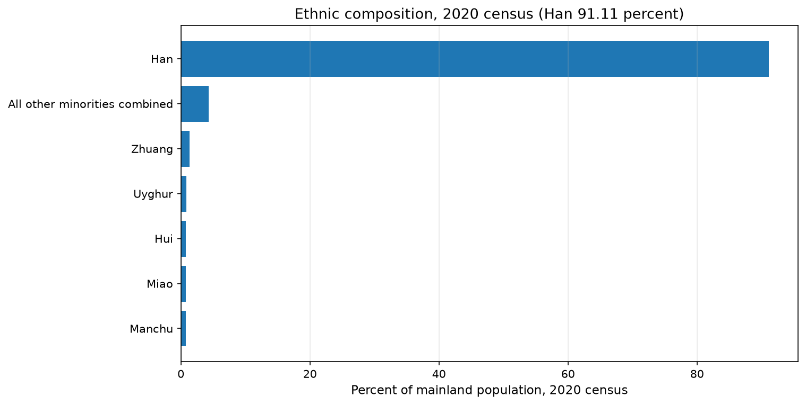
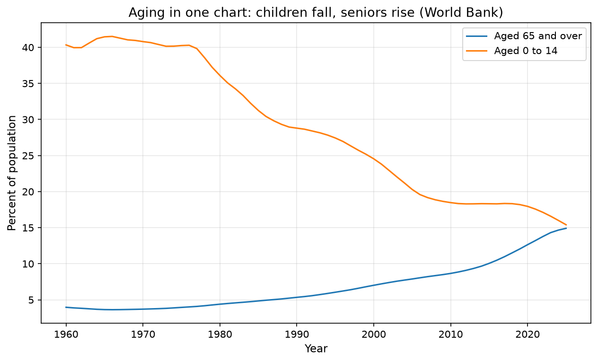
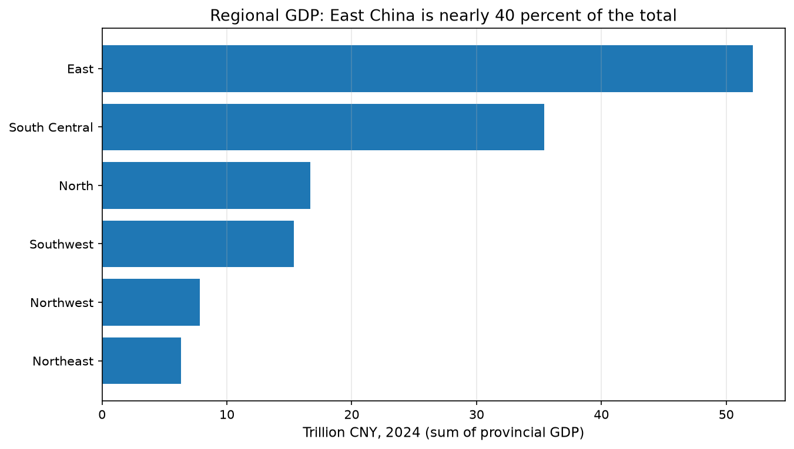
On religion, the census does not ask the question, and published estimates disagree. The project shows three of them side by side (Pew 2023, CIA 2021, China Social Survey 2010) and explains why they differ, rather than picking one.
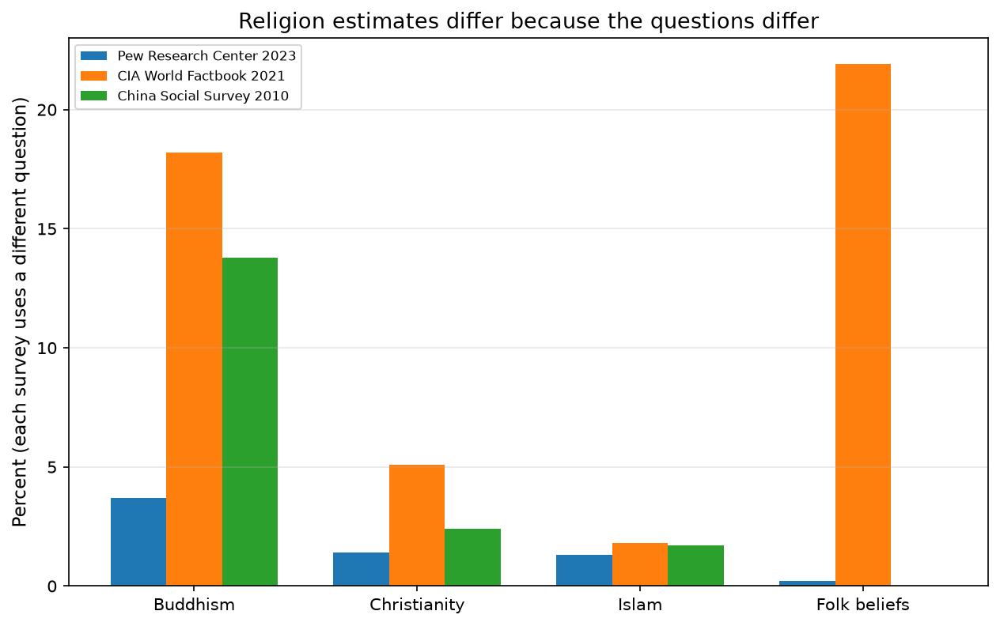
The 15th plan (2026 to 2030) was adopted March 12, 2026. It has 20 indicators across 5 dimensions and 109 major projects. Its core goal is to lay the foundation for doubling GDP per person by 2035 from 2020, which needs about 4.17 percent average growth a year. The 2026 growth target is 4.5 to 5.0 percent.
Headline targets include: digital economy 12.5 percent of GDP by 2030; patents over 22 per 10,000 people; working-age education 11.7 years (binding); life expectancy 80 years; grain capacity 725 million tons (binding); energy production capacity 5.8 billion tons of coal equivalent.
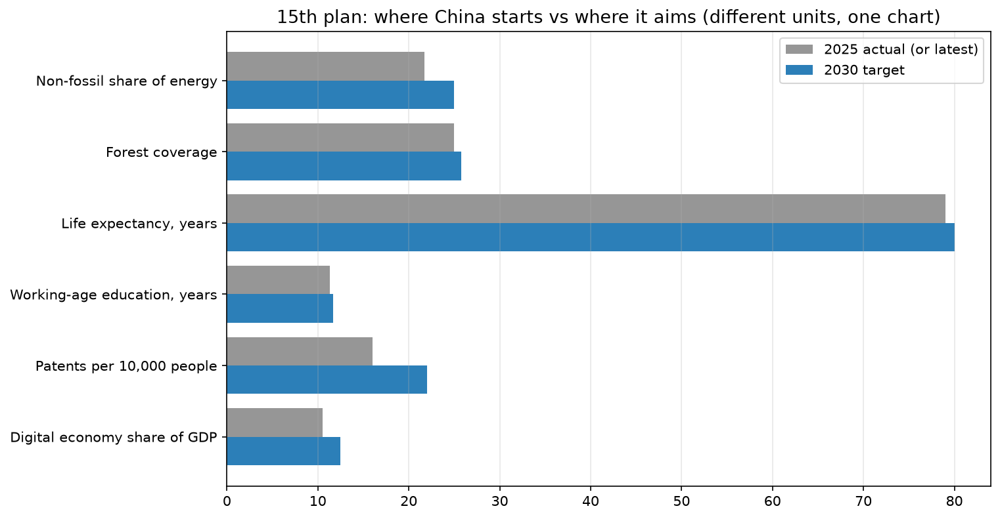
Where sources disagree, the project keeps the disagreement open: non-fossil energy share 25 percent (ICBC and Fidelity) versus about 27 percent (iGDP citing Government Work Report proposals); carbon intensity about 17 percent versus 17.7 percent in brackets. Full-year 2026 results do not exist yet, so 2026 figures are labeled as first three quarters or September 2026 from secondary analysis citing national statistics.
World Bank Open Data (GDP, growth, poverty, life expectancy, fertility, urbanization, trade, research spending, age structure); National Bureau of Statistics of China and National Development and Reform Commission plan documents and communiques (plan targets, 2025 results, provincial GDP, census, births, energy mix, debt via secondary analysis); Cato Institute and census reports for composition data. Every notebook names its sources, and PROVENANCE.md lists them all.